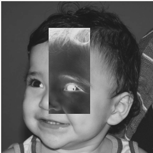

Regiões
Esse programa solicita ao usuário as coordenadas de dois pontos P1 e P2 localizados dentro dos limites do tamanho da imagem e exibe que lhe for fornecida. Entretanto, a região definida pelo retângulo de vértices opostos definidos pelos pontos P1 e P2 será exibida com o negativo da imagem na região correspondente. O efeito é ilustrado na Figura

No exemplo acima os pontos são (45,80) e (190,150). Segue abixo o código escrito na linguagem python (cv2)
Trocar regiões
O programa troca os quadrantes aleatóriamente. O efeito é ilustrado na Figura:

Segue abixo o código escrito na linguagem python (cv2)